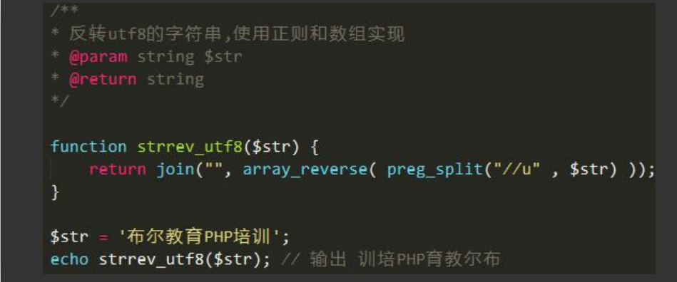

原文出处:本文由博客园博主蜗牛闪电侠提供。
原文连接:https://www.cnblogs.com/xssz/p/11620738.html
原文连接:https://www.cnblogs.com/xssz/p/11620738.html
目录
- php常用自定义函数类下载
- php 设置字符编码为utf-8
- GB2312和utf8相互转换
- 路径格式化(替换双斜线为单斜线)
- 获取当前文件的目录
- 打印输出
- api返回信息
- 字符串截取
- 字符串make_by_id转成makeById
- 数组 字符串 对象 json格式的字符串互转
- 强制类型转换
- php序列化serialize与返回序列化unserialeze
- 创建日志文件
- 返回二维数组其中一段的数据
- 获取ip地址
- PHP限制IP访问 只允许指定IP访问 允许*号通配符过滤IP
- 获取地址路径里0到第一个\线的部分
- 获取当前文件所在的文件路径
- 获取随机字符串
- 中文字符串反转
- 检查目标文件夹是否存在，如果不存在则自动创建该目录
- 默认获得文件修改时间
- 判断后缀类型
- 检查文件类型
- 获取文件后缀名,并判断是否在定义的数组中
- 判断路径是文件还是目录
- 计算文件或目录字节大小
- 接收异步过来的get消息
- curl之get请求
- curl之post请求
- curl之post_get请求
- 判断数组类型参数是否含有空元素值
- 判断是否传入必要参数
php常用自定义函数类下载
https://pan.baidu.com/s/18ZuQm5cx3ynQtQqcQgK0Vw
php 设置字符编码为utf-8
header("Content-Type: text/html;charset=utf-8");
GB2312和utf8相互转换
echo iconv('GB2312', 'UTF-8//IGNORE', $str); //将字符串的编码从GB2312转到UTF-8
//ignore的意思是忽略转换时的错误，如果没有ignore参数，所有该字符后面的字符串都无法被保存。
iconv("UTF-8","GB2312//IGNORE",$data);
print_r(iconv_get_encoding()); //得到当前页面编码信息
// 转码
function gbk($str){return iconv('utf-8','gbk',$str);}
function utf8($str){return iconv('gbk','utf-8',$str);}
路径格式化(替换双斜线为单斜线)
function path_formate($str){
return str_replace('\\\\','\\',$str);
}获取当前文件的目录
方法一:
define('BASE_PATH',rtrim(str_replace('\\','/',__DIR__).'/'));
方法二:
define('BASE_DIR', rtrim(str_replace('\\', '/', dirname(__FILE__)),'/').'/');
打印输出
function dump($var)
{
echo '<pre>';
print_r($var);
echo '</pre>';
}
function vp($var)
{
echo '<pre>';
var_dump($var);
echo '</pre>';
}
function dd($var)
{
echo '<pre>';
var_dump($var);
echo '</pre>';
die;
}api返回信息
/**
* 数据返回
* @param [int] $code [结果码 200:正常/4**数据问题/5**服务器问题]
* @param [string] $msg [返回的提示信息]
* @param [array] $data [返回的数据]
* @return [string] [最终的json数据]
*/
public function return_msg($code, $msg = '', $data = []) {
/*********** 组合数据 ***********/
$return_data['code'] = $code;
$return_data['msg'] = $msg;
$return_data['data'] = $data;
/*********** 返回信息并终止脚本 ***********/
echo json_encode($return_data,JSON_UNESCAPED_UNICODE);
die;
}字符串截取
方法一:
在公共的common.php中
//字符串截取并且超出显示省略号
function subtext($text, $length)
{
if(mb_strlen($text, ‘utf8’) > $length)
return mb_substr($text,0,$length,’utf8′).’ …’;
return $text;
}在模版中调用则：
{$tops.title | subtext=18}
方法二:
在公共的common.php中
//字符串截取
function cut_str($sourcestr,$cutlength)
{
$returnstr='';
$i=0;
$n=0;
$str_length=strlen($sourcestr);//字符串的字节数
while (($n<$cutlength) and ($i<=$str_length))
{
$temp_str=substr($sourcestr,$i,1);
$ascnum=Ord($temp_str);//得到字符串中第$i位字符的ascii码
if ($ascnum>=224) //如果ASCII位高与224，
{
$returnstr=$returnstr.substr($sourcestr,$i,3); //根据UTF-8编码规范，将3个连续的字符计为单个字符
$i=$i+3; //实际Byte计为3
$n++; //字串长度计1
}
elseif ($ascnum>=192) //如果ASCII位高与192，
{
$returnstr=$returnstr.substr($sourcestr,$i,2); //根据UTF-8编码规范，将2个连续的字符计为单个字符
$i=$i+2; //实际Byte计为2
$n++; //字串长度计1
}
elseif ($ascnum>=65 && $ascnum<=90) //如果是大写字母，
{
$returnstr=$returnstr.substr($sourcestr,$i,1);
$i=$i+1; //实际的Byte数仍计1个
$n++; //但考虑整体美观，大写字母计成一个高位字符
}
else //其他情况下，包括小写字母和半角标点符号，
{
$returnstr=$returnstr.substr($sourcestr,$i,1);
$i=$i+1; //实际的Byte数计1个
$n=$n+0.5; //小写字母和半角标点等与半个高位字符宽...
}
}
if ($str_length>$i){
$returnstr = $returnstr . "...";//超过长度时在尾处加上省略号
}
return $returnstr;
} 在模版中调用则：
{$brand.brand_description|cut_str=###,10}
字符串make_by_id转成makeById
function changestr($string){
if(!is_string($string)){
die('please input string.');
}
if(strpos($string,'_')){
$stringArr=explode('_',$string);
$str='';
foreach ($stringArr as $v){
$str .= ucfirst($v);
}
return $str;
}
}数组 字符串 对象 json格式的字符串互转
/**
* 对象 转 数组
*
* @param object $obj 对象
* @return array
*/
function object2array(&$object) {
$object = json_decode( json_encode( $object),true);
return $object;
}
/****对象转json数组格式的字符串*****/
function obj2arr($object) {
$json_object = json_encode($object);
echo "<pre>";
var_dump($json_object);die;
$arr = json_decode($json_object, 1);
return $arr;
}
/****json转数组*****/
/**
* [json_to_arr description] json_to_arr 遍历把json转为数组
* @param [type] $jsonstr [description]
* @return boolean [description]
*/
//测试数据:$resp='{"jingdong_omnichannel_order_ship_update_responce":{"code":"0","result":"{\\"code\\":\\"400\\",\\"message\\":\\"系统异常:物流组件中为已取消状态\\",\\"success\\":false}"}}';
function json_to_arr2($jsonstr)
{
if (is_string($jsonstr)&&is_array(json_decode($jsonstr, true))) {
$arr = json_decode($jsonstr, true);
foreach ($arr as $k => $v) {
if (is_array($v)) {
foreach ($v as $kk=>$vv){
if(is_string($vv) && is_array(json_decode($vv, true))){
$arr[$k][$kk] = json_decode($vv, true);
}
}
}
if(is_string($v)&&is_sarray(json_decode($v,true))){
$arr[$k]=json_decode($v,true);
}
}
return $arr;
} else {
die('This is not jsonString!');
}
}
/**
* 数组 转 对象
*
* @param array $arr 数组
* @return object
*/
function array_to_object($arr) {
if (gettype($arr) != 'array') {
return;
}
foreach ($arr as $k => $v) {
if (gettype($v) == 'array' || getType($v) == 'object') {
$arr[$k] = (object)array_to_object($v);
}
}
return (object)$arr;
}
$arr = array(
'name'=>'haima',
'age'=>32,
'gender'=>'nan'
);
$a=(Object)($arr); //数组转对象
echo '<pre>';
var_dump($a);
$jsonstring=json_encode($array,JSON_UNESCAPED_UNICODE); //对象转json字符串 不转义中文汉字
echo '<pre>';
var_dump($jsonstring);
$abj=json_decode($array); //json转对象
$array=json_decode($array,true); //json转数组
echo '<pre>';
$b=(Array)($a); //对象转数组
var_dump($b);强制类型转换
/**
* 强制类型转换
* @param string $data
* @param string $type
* @return mixed
*/
private function typeCast(&$data, $type)
{
switch (strtolower($type)) {
// 数组
case 'a':
$data = (array) $data;
break;
// 数字
case 'd':
$data = (int) $data;
break;
// 浮点
case 'f':
$data = (float) $data;
break;
// 布尔
case 'b':
$data = (boolean) $data;
break;
// 字符串
case 's':
default:
if (is_scalar($data)) {
$data = (string) $data;
} else {
throw new \InvalidArgumentException('variable type error：' . gettype($data));
}
}
}
php序列化serialize与返回序列化unserialeze
serialize() 把变量和它们的值编码成文本
unserialize() 恢复原先变量
创建日志文件
- 方法一(适合临时用):
//数组/字符串都可以
file_put_contents( 'log.log', date('Y-m-d H:i:s',time()) .' ' . var_export($_REQUEST,true) . "\r\n", FILE_APPEND);
- 方法二:
例: /www.wdmcake.com/data/log/日期/$file文件名
/**
*$str array/str 要写入的内容
*$dir str 日期文件夹里面的新建的文件夹名字 例如 /www.wdmcake.com/data/log/201806/sms_apiaas
*$file string 文件的名字 例:send_log_20180628.log
*/
function wdmlog($str,$dir='log',$file='log')
{
if (!file_exists(ROOT_PATH . 'data/log/' . date('Ym'). '/' . $dir))
{
make_dir(ROOT_PATH . 'data/log/' . date('Ym'). '/' . $dir);
}
$str = is_array($str) ? var_export($str,true):$str;
file_put_contents(ROOT_PATH . 'data/log/' . date('Ym'). '/' . $dir.'/' . $file .'_' . date('Ymd') . '.log', local_date('Y-m-d H:i:s') .' ' . $str . "\r\n", FILE_APPEND);
} - 方法三:
function create_log($data,$merchant,$agency,$file='')
{
if(empty($merchant)) die("商户code不可为空");
if(empty($agency)) die("平台code不可为空");
$file_path = ROOT_PATH . 'logdata/'.$merchant.'/'.$agency;
if(!is_dir($file_path)){
mkdir($file_path, 0777, true);
}
file_put_contents($file_path.'/'.$agency.'_' . $file . date('Ymd',time()) . '.log', date('Y-m-d H:i:s',time()) .' ' . var_export($data,true) . "\r\n", FILE_APPEND);
}返回二维数组其中一段的数据
/**
* [slice description] 返回二维数组其中一段的数据
* @param [type] $arr [description] 传二维关联数组
* @param [type] $star [description] 截取的开始位置
* @param [type] $length [description] 截取的长度
* @param [type] $order [description] 0顺序 -1倒序
* @param [type] $preserve [description] 保持索引关系 true - 保留键名 false - 默认。重置键名
* @return [type] [description]
*/
function slice($arr, $star, $length, $order = 0, $preserve = false)
{
foreach ($arr as $key => $value) {
$arr[$key] = array_slice($value, $star, $length, $preserve);
}
if ($order) {
return array_reverse($arr);
}
return $arr;
}例子:
<?php
header('Content-Type=text/html;charset:utf8');
$arr = array(
[
'id' => '1',
'name' => '李四',
'age' => '21',
'gender' => '男',
],
[
'id' => '2',
'name' => '王五',
'age' => '22',
'gender' => '男',
],
);
echo '<pre>';
print_r(slice($arr, 0, 2));
//打印:
// 打印结果:
// Array
// (
// [0] => Array
// (
// [id] => 1
// [name] => 李四
// )
// [1] => Array
// (
// [id] => 2
// [name] => 王五
// )
// )
获取ip地址
- 方法一
$_SERVER['REMOTE_ADDR']- 方法二
/**
* 获得访问的IP
* Enter description here ...
*/
function getIP() {
return isset($_SERVER["HTTP_X_FORWARDED_FOR"])?$_SERVER["HTTP_X_FORWARDED_FOR"]
:(isset($_SERVER["HTTP_CLIENT_IP"])?$_SERVER["HTTP_CLIENT_IP"]
:$_SERVER["REMOTE_ADDR"]);
} - 方法三
/**
* 获得用户的真实IP地址
*
* @access public
* @return string
*/
function real_ip()
{
static $realip = NULL;
if ($realip !== NULL)
{
return $realip;
}
if (isset($_SERVER))
{
if (isset($_SERVER['HTTP_X_FORWARDED_FOR']))
{
$arr = explode(',', $_SERVER['HTTP_X_FORWARDED_FOR']);
/* 取X-Forwarded-For中第一个非unknown的有效IP字符串 */
foreach ($arr AS $ip)
{
$ip = trim($ip);
if ($ip != 'unknown')
{
$realip = $ip;
break;
}
}
}
elseif (isset($_SERVER['HTTP_CLIENT_IP']))
{
$realip = $_SERVER['HTTP_CLIENT_IP'];
}
else
{
if (isset($_SERVER['REMOTE_ADDR']))
{
$realip = $_SERVER['REMOTE_ADDR'];
}
else
{
$realip = '0.0.0.0';
}
}
}
else
{
if (getenv('HTTP_X_FORWARDED_FOR'))
{
$realip = getenv('HTTP_X_FORWARDED_FOR');
}
elseif (getenv('HTTP_CLIENT_IP'))
{
$realip = getenv('HTTP_CLIENT_IP');
}
else
{
$realip = getenv('REMOTE_ADDR');
}
}
preg_match("/[\d\.]{7,15}/", $realip, $onlineip);
$realip = !empty($onlineip[0]) ? $onlineip[0] : '0.0.0.0';
return $realip;
}PHP限制IP访问 只允许指定IP访问 允许*号通配符过滤IP
/**
* 检测访问的ip是否为规定的允许的ip
* Enter description here ...
*/
function check_ip(){
$ALLOWED_IP=array('192.168.2.*','127.0.0.1','192.168.2.49');
$IP=getIP();
$check_ip_arr= explode('.',$IP);//要检测的ip拆分成数组
#限制IP
if(!in_array($IP,$ALLOWED_IP)) {
foreach ($ALLOWED_IP as $val){
if(strpos($val,'*')!==false){//发现有*号替代符
$arr=array();//
$arr=explode('.', $val);
$bl=true;//用于记录循环检测中是否有匹配成功的
for($i=0;$i<4;$i++){
if($arr[$i]!='*'){//不等于* 就要进来检测，如果为*符号替代符就不检查
if($arr[$i]!=$check_ip_arr[$i]){
$bl=false;
break;//终止检查本个ip 继续检查下一个ip
}
}
}//end for
if($bl){//如果是true则找到有一个匹配成功的就返回
return;
die;
}
}
}//end foreach
header('HTTP/1.1 403 Forbidden');
echo "Access forbidden";
die;
}
} 获取地址路径里0到第一个\线的部分
function f_dirname($f_path){
return substr($f_path,0,strrpos($f_path,'\\'));
}获取当前文件所在的文件路径
define('CUR_API_PATH', rtrim(str_replace('\\', '/', dirname(__FILE__)),'/').'/');获取随机字符串
/**
* 随机字符
* @param int $length 长度
* @param string $type 类型
* @param int $convert 转换大小写 1大写 0小写
* @return string
*/
function random($length=10, $type='letter', $convert=0)
{
$config = array(
'number'=>'1234567890',
'letter'=>'abcdefghijklmnopqrstuvwxyzABCDEFGHIJKLMNOPQRSTUVWXYZ',
'string'=>'abcdefghjkmnpqrstuvwxyzABCDEFGHJKMNPQRSTUVWXYZ23456789',
'all'=>'abcdefghijklmnopqrstuvwxyzABCDEFGHIJKLMNOPQRSTUVWXYZ1234567890'
);
if(!isset($config[$type])) $type = 'letter';
$string = $config[$type];
$code = '';
$strlen = strlen($string) -1;
for($i = 0; $i < $length; $i++){
$code .= $string{mt_rand(0, $strlen)};
}
if(!empty($convert)){
$code = ($convert > 0)? strtoupper($code) : strtolower($code);
}
return $code;
}中文字符串反转

检查目标文件夹是否存在，如果不存在则自动创建该目录
/**
* 检查目标文件夹是否存在，如果不存在则自动创建该目录
*
* @access public
* @param string folder 目录路径。不能使用相对于网站根目录的URL
*
* @return bool
*/
function make_dir($folder)
{
$reval = false;
if (!file_exists($folder))
{
/* 如果目录不存在则尝试创建该目录 */
@umask(0);
/* 将目录路径拆分成数组 */
preg_match_all('/([^\/]*)\/?/i', $folder, $atmp);
/* 如果第一个字符为/则当作物理路径处理 */
$base = ($atmp[0][0] == '/') ? '/' : '';
/* 遍历包含路径信息的数组 */
foreach ($atmp[1] AS $val)
{
if ('' != $val)
{
$base .= $val;
if ('..' == $val || '.' == $val)
{
/* 如果目录为.或者..则直接补/继续下一个循环 */
$base .= '/';
continue;
}
}
else
{
continue;
}
$base .= '/';
if (!file_exists($base))
{
/* 尝试创建目录，如果创建失败则继续循环 */
if (@mkdir(rtrim($base, '/'), 0777))
{
@chmod($base, 0777);
$reval = true;
}
}
}
}
else
{
/* 路径已经存在。返回该路径是不是一个目录 */
$reval = is_dir($folder);
}
clearstatcache();
return $reval;
}默认获得文件修改时间
function filetime($way,$char='m'){
date_default_timezone_set('PRC');
switch($char){
case 'c':$localtime = date('Y-m-d H:i:s',filectime($way));
break;
case 'm':$localtime = date('Y-m-d H:i:s',filemtime($way));
break;
case 'a':$localtime = date('Y-m-d H:i:s',fileatime($way));
break;
}
return $localtime;
}判断后缀类型
function suffixtype($f_path){
$info = pathinfo($f_path);
$f_type = 'file';
switch(strtolower(@$info["extension"])){
case 'jpg':case 'jpeg':case 'gif':
case 'png':case 'bmp':$f_type = 'image';break;
case 'pl':case 'c':case 'cpp':case 'log':case 'asp':case 'php':case 'jsp':case 'txt':case 'xml':case 'html':case 'htm':case 'phtml':case 'jhtml':case 'java':case 'cfg':case 'ini':
case 'text':case 'bat':$f_type = 'text';break;
}
return $f_type;
}检查文件类型
/**
* 检查文件类型
*
* @access public
* @param string filename 文件名
* @param string realname 真实文件名
* @param string limit_ext_types 允许的文件类型
* @return string
*/
function check_file_type($filename, $realname = '', $limit_ext_types = '')
{
if ($realname)
{
$extname = strtolower(substr($realname, strrpos($realname, '.') + 1));
}
else
{
$extname = strtolower(substr($filename, strrpos($filename, '.') + 1));
}
if ($limit_ext_types && stristr($limit_ext_types, '|' . $extname . '|') === false)
{
return '';
}
$str = $format = '';
$file = @fopen($filename, 'rb');
if ($file)
{
$str = @fread($file, 0x400); // 读取前 1024 个字节
@fclose($file);
}
else
{
if (stristr($filename, ROOT_PATH) === false)
{
if ($extname == 'jpg' || $extname == 'jpeg' || $extname == 'gif' || $extname == 'png' || $extname == 'doc' ||
$extname == 'xls' || $extname == 'txt' || $extname == 'zip' || $extname == 'rar' || $extname == 'ppt' ||
$extname == 'pdf' || $extname == 'rm' || $extname == 'mid' || $extname == 'wav' || $extname == 'bmp' ||
$extname == 'swf' || $extname == 'chm' || $extname == 'sql' || $extname == 'cert'|| $extname == 'pptx' ||
$extname == 'xlsx' || $extname == 'docx')
{
$format = $extname;
}
}
else
{
return '';
}
}
if ($format == '' && strlen($str) >= 2 )
{
if (substr($str, 0, 4) == 'MThd' && $extname != 'txt')
{
$format = 'mid';
}
elseif (substr($str, 0, 4) == 'RIFF' && $extname == 'wav')
{
$format = 'wav';
}
elseif (substr($str ,0, 3) == "\xFF\xD8\xFF")
{
$format = 'jpg';
}
elseif (substr($str ,0, 4) == 'GIF8' && $extname != 'txt')
{
$format = 'gif';
}
elseif (substr($str ,0, 8) == "\x89\x50\x4E\x47\x0D\x0A\x1A\x0A")
{
$format = 'png';
}
elseif (substr($str ,0, 2) == 'BM' && $extname != 'txt')
{
$format = 'bmp';
}
elseif ((substr($str ,0, 3) == 'CWS' || substr($str ,0, 3) == 'FWS') && $extname != 'txt')
{
$format = 'swf';
}
elseif (substr($str ,0, 4) == "\xD0\xCF\x11\xE0")
{ // D0CF11E == DOCFILE == Microsoft Office Document
if (substr($str,0x200,4) == "\xEC\xA5\xC1\x00" || $extname == 'doc')
{
$format = 'doc';
}
elseif (substr($str,0x200,2) == "\x09\x08" || $extname == 'xls')
{
$format = 'xls';
} elseif (substr($str,0x200,4) == "\xFD\xFF\xFF\xFF" || $extname == 'ppt')
{
$format = 'ppt';
}
} elseif (substr($str ,0, 4) == "PK\x03\x04")
{
if (substr($str,0x200,4) == "\xEC\xA5\xC1\x00" || $extname == 'docx')
{
$format = 'docx';
}
elseif (substr($str,0x200,2) == "\x09\x08" || $extname == 'xlsx')
{
$format = 'xlsx';
} elseif (substr($str,0x200,4) == "\xFD\xFF\xFF\xFF" || $extname == 'pptx')
{
$format = 'pptx';
}else
{
$format = 'zip';
}
} elseif (substr($str ,0, 4) == 'Rar!' && $extname != 'txt')
{
$format = 'rar';
} elseif (substr($str ,0, 4) == "\x25PDF")
{
$format = 'pdf';
} elseif (substr($str ,0, 3) == "\x30\x82\x0A")
{
$format = 'cert';
} elseif (substr($str ,0, 4) == 'ITSF' && $extname != 'txt')
{
$format = 'chm';
} elseif (substr($str ,0, 4) == "\x2ERMF")
{
$format = 'rm';
} elseif ($extname == 'sql')
{
$format = 'sql';
} elseif ($extname == 'txt')
{
$format = 'txt';
}
}
if ($limit_ext_types && stristr($limit_ext_types, '|' . $format . '|') === false)
{
$format = '';
}
return $format;
}获取文件后缀名,并判断是否在定义的数组中
/**
* 获取文件后缀名,并判断是否合法
*
* @param string $file_name //是一个文件的路径
* @param array $allow_type //需要的文件类型数组
* @return blob
*/
function get_file_suffix($file_name, $allow_type = array())
{
$file_suffix = strtolower(array_pop(explode('.', $file_name)));
if (empty($allow_type))
{
return $file_suffix;
}
else
{
if (in_array($file_suffix, $allow_type))
{
return true;
}
else
{
return false;
}
}
}判断路径是文件还是目录
function f_type($f_path){
return is_dir($f_path)?'dir':suffixtype($f_path);
}计算文件或目录字节大小
//计算文件或目录字节大小
function bytesize_calc($f_path){
if(!is_dir($f_path)){
return sprintf("%u", filesize($f_path));}
$bytesize = 0;
$f_arr = scandir($f_path);
$size = count($f_arr);
for($i=0;$i<$size;$i++){
if('.'==$f_arr[$i]||'..'==$f_arr[$i])continue;
$file_or_dir = $f_path.'/'.$f_arr[$i];
$bytesize += bytesize_calc($file_or_dir);
}
return $bytesize;
}
//获得文件大小
function f_size($f_path){
return size_formate(bytesize_calc($f_path));
}接收异步过来的get消息
$sms_result_data = $_GET; //用这种
$param = request()->param(); //thinkphp5接收消息
$sms_result_data1 = file_get_contents("php://input");curl之get请求
function _curl_get($urldata)
{
$ch = curl_init();
curl_setopt($ch, CURLOPT_URL,$urldata);
curl_setopt($ch, CURLOPT_HEADER, 0);
curl_setopt($ch, CURLOPT_RETURNTRANSFER, 1);
curl_setopt($curl, CURLOPT_SSL_VERIFYPEER, false);//不验证SSL证书。
$data = curl_exec($ch);
curl_close($ch);
if ($data)
return $data;
else
return false;
}curl之post请求
如果是有图片要上传加下面用这行代码
curl_file_create(ROOT_PATH.'public'.$value["goods_img"]);
/**
* [post description]
* @param [type] $url [请求的url]
* @param string $post_data [请求的数据]
* @param integer $timeout [请求超时时间]
* @return [type] $Mix [混合数据json|array|obj]
*/
function post($url, $post_data = '', $timeout = 3000)
{
header("Content-type:text/html;charset=utf-8");
$ch = curl_init();
curl_setopt ($ch, CURLOPT_URL, $url);
curl_setopt ($ch, CURLOPT_POST, 1);
curl_setopt ($ch, CURLOPT_POSTFIELDS, $post_data);
curl_setopt ($ch, CURLOPT_RETURNTRANSFER, 1);
curl_setopt ($ch, CURLOPT_CONNECTTIMEOUT, $timeout);
curl_setopt($ch, CURLOPT_HEADER, false);
$file_contents = curl_exec($ch);
curl_close($ch);
if ($content){
return $file_contents;
}else{
return false;
}
}curl之post_get请求
如果是有图片要上传加下面用这行代码
curl_file_create(ROOT_PATH.'public'.$value["goods_img"]);
- 方法一
/**
* [_curl_post_get description]
* 如果$data为空转为get请求.https不验证证书
* @param [type] $url [url]
* @param array $data [要传的数据]
* @param integer $timeout [设置请求超时的时间]
* @return [type] $Mix [混合数据json|array|obj]
*/
function _curl_post($url, $data = '',$timeout = 3000) {
header("Content-type:text/html;charset=utf-8");
$ch = curl_init();
curl_setopt($ch, CURLOPT_URL, $url); //请求的url
curl_setopt($ch, CURLOPT_HEADER, false); ////是否携带head头信息 ture / error
curl_setopt($ch, CURLOPT_RETURNTRANSFER, 1); //返回数据还是打印数据 0,直接输出 1,返回
curl_setopt($ch, CURLOPT_CONNECTTIMEOUT, $timeout); //设置请求超时的时间
// https请求 不验证证书和hosts方法:
if (strlen($url) > 5 && strtolower(substr($url, 0, 5)) == "https")
//if (1 == strpos("$".$url, "https://")) //效果同上面
{
curl_setopt($ch, CURLOPT_SSL_VERIFYPEER, false);
curl_setopt($ch, CURLOPT_SSL_VERIFYHOST, false);
}
if(!empty($post_data)){
curl_setopt($ch, CURLOPT_POST,1); //设置post方式请求,如果不写默认为get方式
curl_setopt($ch, CURLOPT_POSTFIELDS,$data); //要传递的参数
}
//发送请求 并接收数据赋值给$data
$data = curl_exec($ch);
//关闭请求资源
curl_close($ch);
$content = iconv('gb2312', 'utf-8//IGNORE',$data); //修改字符编码
if ($content)
return $content;
else
return false;
}- 方法二
/**
* curl访问
* @author rainfer <81818832@qq.com>
* @param string $url
* @param string $type
* @param boolean $data
* @param string $err_msg
* @param int $timeout
* @param array $cert_info
* @return string
*/
function go_curl($url, $type, $data = false, &$err_msg = null, $timeout = 20, $cert_info = array())
{
$type = strtoupper($type);
if ($type == 'GET' && is_array($data)) {
$data = http_build_query($data);
}
$option = array();
if ( $type == 'POST' ) {
$option[CURLOPT_POST] = 1;
}
if ($data) {
if ($type == 'POST') {
$option[CURLOPT_POSTFIELDS] = $data;
} elseif ($type == 'GET') {
$url = strpos($url, '?') !== false ? $url.'&'.$data : $url.'?'.$data;
}
}
$option[CURLOPT_URL] = $url;
$option[CURLOPT_FOLLOWLOCATION] = TRUE;
$option[CURLOPT_MAXREDIRS] = 4;
$option[CURLOPT_RETURNTRANSFER] = TRUE;
$option[CURLOPT_TIMEOUT] = $timeout;
//设置证书信息
if(!empty($cert_info) && !empty($cert_info['cert_file'])) {
$option[CURLOPT_SSLCERT] = $cert_info['cert_file'];
$option[CURLOPT_SSLCERTPASSWD] = $cert_info['cert_pass'];
$option[CURLOPT_SSLCERTTYPE] = $cert_info['cert_type'];
}
//设置CA
if(!empty($cert_info['ca_file'])) {
// 对认证证书来源的检查，0表示阻止对证书的合法性的检查。1需要设置CURLOPT_CAINFO
$option[CURLOPT_SSL_VERIFYPEER] = 1;
$option[CURLOPT_CAINFO] = $cert_info['ca_file'];
} else {
// 对认证证书来源的检查，0表示阻止对证书的合法性的检查。1需要设置CURLOPT_CAINFO
$option[CURLOPT_SSL_VERIFYPEER] = 0;
}
$ch = curl_init();
curl_setopt_array($ch, $option);
$response = curl_exec($ch);
$curl_no = curl_errno($ch);
$curl_err = curl_error($ch);
curl_close($ch);
// error_log
if($curl_no > 0) {
if($err_msg !== null) {
$err_msg = '('.$curl_no.')'.$curl_err;
}
}
return $response;
}- 方法三
//curl模拟post发送请求
function curl_sent($url, $postFields = null)
{
$header = array(
// 'Content-Type: application/json',
'Content-Type: application/x-www-form-urlencoded'
);
$ch = curl_init();
curl_setopt($ch, CURLOPT_URL, $url);
curl_setopt($ch, CURLOPT_HTTPHEADER, $header);
curl_setopt($ch, CURLOPT_FAILONERROR, false);
curl_setopt($ch, CURLOPT_RETURNTRANSFER, true);
// https 请求
if (strlen($url) > 5 && strtolower(substr($url, 0, 5)) == "https")
{
curl_setopt($ch, CURLOPT_SSL_VERIFYPEER, false);
curl_setopt($ch, CURLOPT_SSL_VERIFYHOST, false);
}
if (is_array($postFields) && 0 < count($postFields))
{
curl_setopt($ch, CURLOPT_POST, true);
$postMultipart = false;
foreach ($postFields as $k => $v)
{
if ('@' == substr($v, 0, 1))
{
$postMultipart = true;
break;
}
}
unset($k, $v);
if ($postMultipart) {
curl_setopt($ch, CURLOPT_POSTFIELDS, $postFields);
} else {
curl_setopt($ch, CURLOPT_POSTFIELDS, http_build_query($postFields));
}
}
$reponse = curl_exec($ch);
if (curl_errno($ch))
{
throw new JosSdkException(curl_error($ch), 0);
} else {
$httpStatusCode = curl_getinfo($ch, CURLINFO_HTTP_CODE);
if (200 !== $httpStatusCode)
{
throw new JosSdkException($reponse, $httpStatusCode);
}
}
curl_close($ch);
return $reponse;
}方法四**:
public $connectTimeout = 0;
public $readTimeout = 0;
public function curl($url, $postFields = null)
{
$ch = curl_init();
curl_setopt($ch, CURLOPT_URL, $url);
curl_setopt($ch, CURLOPT_FAILONERROR, false);
curl_setopt($ch, CURLOPT_RETURNTRANSFER, true);
if ($this->readTimeout) {
curl_setopt($ch, CURLOPT_TIMEOUT, $this->readTimeout);
}
if ($this->connectTimeout) {
curl_setopt($ch, CURLOPT_CONNECTTIMEOUT, $this->connectTimeout);
}
//https 请求
if(strlen($url) > 5 && strtolower(substr($url,0,5)) == "https" ) {
curl_setopt($ch, CURLOPT_SSL_VERIFYPEER, false);
curl_setopt($ch, CURLOPT_SSL_VERIFYHOST, false);
}
if (is_array($postFields) && 0 < count($postFields))
{
$postBodyString = "";
$postMultipart = false;
foreach ($postFields as $k => $v)
{
if("@" != substr($v, 0, 1))//判断是不是文件上传
{
$postBodyString .= "$k=" . urlencode($v) . "&";
}
else//文件上传用multipart/form-data，否则用www-form-urlencoded
{
$postMultipart = true;
}
}
unset($k, $v);
curl_setopt($ch, CURLOPT_POST, true);
if ($postMultipart)
{
curl_setopt($ch, CURLOPT_POSTFIELDS, $postFields);
}
else
{
curl_setopt($ch, CURLOPT_POSTFIELDS, substr($postBodyString,0,-1));
}
}
$reponse = curl_exec($ch);
$reponse = iconv('gb2312', 'utf-8//IGNORE',$reponse); //修改字符编码
create_log('第'.__LINE__.'行', 'wdm', 'jdomnic', 'curl');
create_log($reponse, 'wdm', 'jdomnic', 'curl');
if (curl_errno($ch))
{
throw new Exception(curl_error($ch),0);
}
else
{
$httpStatusCode = curl_getinfo($ch, CURLINFO_HTTP_CODE);
if (200 !== $httpStatusCode)
{
throw new Exception($reponse,$httpStatusCode);
}
}
curl_close($ch);
return $reponse;
}判断数组类型参数是否含有空元素值
//$param array
function is_arraynull($param){
if(!is_array($param)){
return '0';
}else{
foreach ($param as $key => $value) {
if($value!=''){
$ret = is_arraynull($value);
}else{
return 1;
}
}
}
}判断是否传入必要参数
/**
* 判断是否传入必要参数
* @param [type] $inter_param [description]
* @param [type] $agency [description]
* @param [type] $merchant [description]
* @return [type] [description]
*/
function judge_parameter($param){
if(!isset($param['inter_param']) || !isset($param['agency']) || !isset($param['merchant'])){
return false;
}
if(empty($param['inter_param']) || empty($param['agency']) || empty($param['merchant'])){
return false;
}
return true;
}